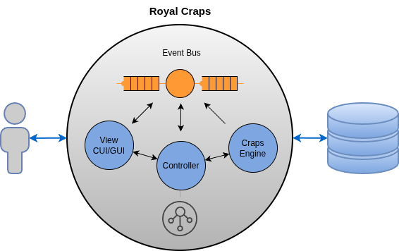
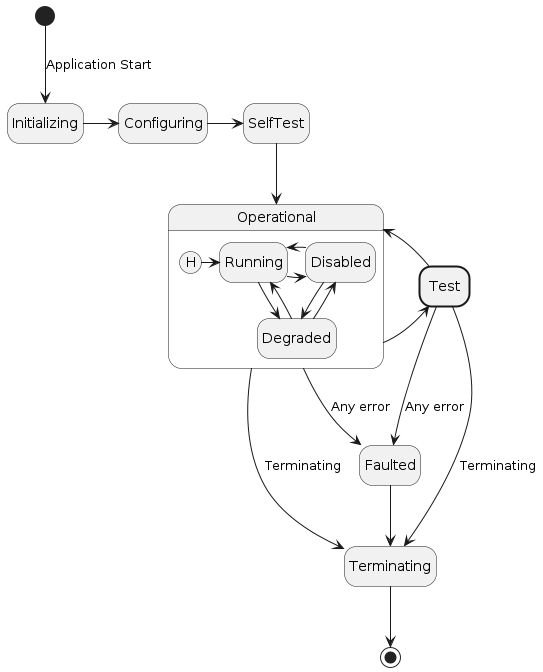
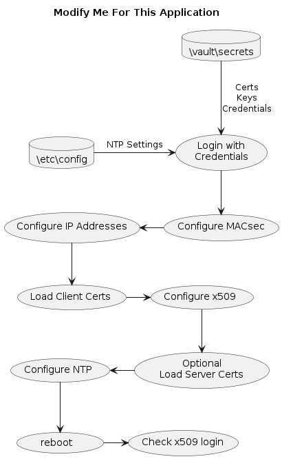
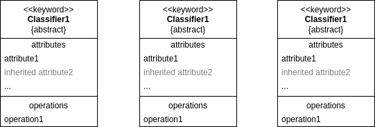
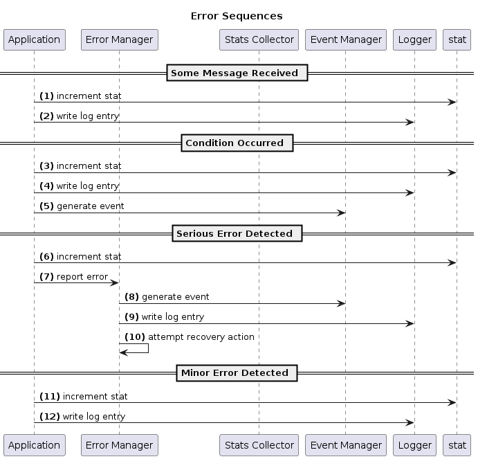

Design of Royal Craps
This document describes the design of Royal Craps version 0.1.0.
Royal Craps is a single-player Craps game. It offers these features:
Line, Odds, Place, Field, and Proposition Bets
Automatic Odds
Quick Bets
Play with Up to Five Computer Buddies
On-Screen Dice Roll Animation
Dice Roll history
Dice Stats
Player Stats Current Session
Player Stats Across All Sessions
Table Stats Current Session
Table Stats All Sessions
Terminal Based UI (future GUI)
This document is primarily for developers maintaining the application itself, however, other interested developers and engineers may find it useful.
User Story
As a user of Royal Craps, I want to:
TBS
TBS
TBS
Design Goals
Important application design goals and constraints:
Goal 1
Goal 2
Application Context
Instructions
In this section describe the application’s view of its processing context. Create or modify the following diagram to agree with your app. Then eliminate this admonition from the design-doc.rst file.
The Royal Craps design is a single process application with multiple threads written specifically for Linux. C++ is the language choice.
The following figure shows Royal Craps’s view of its processing environment.

Figure: Application Context Diagram
The design conforms the Model/View/Controller design paradigm. There is the CUI and GUI making up the View, the Controller, and the Craps Engine making up the Model. Implementation-wise, we have:
Model -
lib-crapsView -
lib-cui/lib-guiController -
lib-controller
There is no database, just a bunch of persistent files. The application performs no networking.
Startup/Shutdown
Startup Behavior
RoyalCraps determines its startup behavior by checking whether a saved current game exists.
First Startup
If no saved current game is found, RoyalCraps performs the following steps:
Create a new player named
Unnamed.Set the player’s bank to
10,000.Select the default table,
Las Vegas Daytime.Display ScreenCrapsTable.
The game is automatically saved under the name Unnamed when the game
ends.
Player Configuration During First Startup
During the first session, the player can use
Control -> Configure to perform the following operations.
- Rename Player
Prompts for a new player name and renames the current player. The associated save file or files are renamed accordingly.
- New Player
Prompts for the name of a new player.
Before switching players, RoyalCraps saves the current player. It then creates and activates the new player with the following defaults:
Bank:
10,000Table: the currently selected table
Game state: reset for the new player
- Choose Player
Because no other players exist during the first session, RoyalCraps displays the following message and makes no change:
No other players to choose from at this time.
Subsequent Startups
If a saved current game exists, RoyalCraps:
Loads the last saved game.
Restores the associated player, bank, table, and game state.
Displays ScreenCrapsTable.
Allows the player to continue from the point at which the game was last saved.
Player Configuration During Subsequent Startups
During subsequent sessions, the player can use
Control -> Configure to perform the following operations.
- Choose Player
Displays the list of available players and prompts the player to select one.
Before switching players, RoyalCraps saves the current player. It then loads the selected player’s saved game, including that player’s table and game state.
- New Player
Prompts for the name of a new player.
The current player is saved before the new player is created. The new player is initialized with a bank of
10,000and uses the currently selected table with a reset game state.- Rename Player
Prompts for a new player name and renames the current player. The associated save file or files are renamed accordingly.
Threads
TBS
Memory Management
TBS
Global Data
TBS
GameEvents
State Management
TBS

Figure: State Diagram
Processing Flow
<Describe processing flow to agree with diagram>

Figure: Processing Flow
main.cpp
TBS
Persistence
TBS
CRC Cards
CRC cards is succinct methodology for object oriented designs where CRC stands for classes, responsibilities, and collaborations. CRC cards are used to discover, collect and document class information. Using CRC cards, each card represents a class and its properties, and is shown in its own paragraph. See Extreme Programming CRC Cards or wikipedia.
Each design section below presents their important classes using CRC cards.
Some sections will present a UML class as well. Something like these.

Figure: Static Class Diagram
Craps Engine
Players
TBS
Tables
TBS
Betting
TBS
Statistics
TBS
Controller
Interfaces
TBS
Event Handling
TBS
Configuration
Command Line
Configuration Files
Environment Vars
TBS
Console User Interface
TBS
OperationManager CRC Card
Purpose
OperationManager coordinates the lifecycle of multi-stage user operations in the CUI.
An operation represents a user-initiated task that may involve navigating a chain of menus, obtaining user confirmation, issuing an asynchronous request to the Craps Engine, processing the corresponding response, and presenting any resulting errors.
The manager maintains the state of the active operation and determines what action should occur as the operation progresses through its stages.
Although betting is a primary use case, OperationManager is not specific to betting. It supports any CUI operation that requires coordinated interaction across menus, dialogs, and asynchronous request/response events.
Use Cases
Making a bet
A player navigates through one or more betting menus to configure a bet. When the player has completed the required selections, the CUI issues a ReqMakeBet request event to the Craps Engine.
OperationManager tracks the operation, associates the request with its eventual response, and determines the next action based on the result.
Success: The betting menu chain is unwound, returning the player to the appropriate underlying screen.
Failure: An error dialog is presented. After the player acknowledges the error, the error dialog is dismissed and the betting menu chain is unwound or otherwise restored according to the intended interaction.
Quitting the game
When the player requests to quit, the CUI presents a DialogConfirmation. The manager associates the confirmation response with the pending quit operation.
Confirmed: The manager initiates the quit request by publishing the appropriate asynchronous request event.
Cancelled: The operation is abandoned, and the player returns to the preceding interface without issuing the quit request.
Other operations requiring confirmation or multi-stage interaction follow the same general pattern.
Responsibilities
Track the active operation. Maintain the identity, type, and current stage of the operation in progress.
Coordinate multi-stage workflows. Track progress through menu selection, confirmation, request submission, response processing, error acknowledgement, and completion as applicable.
Initiate asynchronous requests. Publish the appropriate request event when the operation reaches the stage at which the request should be issued. For example, publish
ReqMakeBetwhen a bet has been fully configured.Correlate requests and responses. Retain the correlation ID and any necessary operation context so that an incoming response event can be matched to the active request and operation.
Process operation results. Determine whether the response indicates success or failure and advance the operation accordingly.
Coordinate error handling. On failure, request presentation of the appropriate error dialog, retain the operation context while the dialog is active, and process the player’s acknowledgement.
Manage surface-stack transitions. Initiate the appropriate dismissal or unwinding of menus and dialogs when the operation succeeds, is cancelled, or finishes error handling. Leave actual surface-stack manipulation to
SurfaceManager.Handle confirmation outcomes. Associate confirmation responses with the operation that requested them and proceed according to the player’s decision.
Complete or cancel operations. Release the active operation’s state when its lifecycle has finished, ensuring that subsequent operations can begin.
Operating Constraints
One active operation at a time. The CUI may have at most one operation managed by
OperationManagerin progress. A new operation must not overwrite or interfere with an existing operation.Asynchronous request/response processing. Issuing a request does not imply that the operation has succeeded. The operation remains active until its result has been processed and any required follow-up interaction has completed.
Correlation-based response matching. A response must be associated with the request that produced it. Unmatched, stale, or unrelated responses must not advance or complete the active operation.
CUI thread ownership. All operation-state transitions and resulting CUI actions must respect the CUI’s thread-ownership rules. Incoming events from other threads must be routed to the CUI thread before they cause UI or operation-state changes.
Separation of responsibilities.
OperationManagercoordinates operations; menus collect choices; dialogs communicate information and collect confirmation or acknowledgement;SurfaceManagermanages the surface stack; and the Craps Engine executes game operations and reports their results.
Completion
An operation is complete when its intended outcome has been reached and all required user interaction and CUI cleanup have finished.
Depending on the operation, completion may follow a successful response, cancellation of a confirmation, or acknowledgement of an error.
Once complete, the manager releases the operation’s state and becomes available to coordinate the next operation.
CuiMain CRC Card
TBS
ScreenCrapsTable CRC Card
TBS
Graphical User Interface
TBS
Physics engine
TBS
Library General
lib-gen is a C++ library providing general purpose cross cutting design elements that most any application can use.
Multi-Layer Configuration
TBS
Error Handling
TBS
Error Passing
Exceptions
ErrorDialogs

Figure: Error Sequence Diagram
EventManager
TBS
Logger
TBS
Timers
TBS
Security
TBS
Quality Attributes
This section identifies the quality attributes that are most important in this design. The first group of elements are considered the higher priority concerns for the design of this application.
Instructions
Modify this section appropriate for your application.
The following quality attributes are less of a concern in this design:
Collateral Design
Language
Implementation language is C++.
Building
Uses the standard project build architecture.
COTS
Links with COTS gRPC community library.
Packaging
Packaged as an RPM.
Automated Unit Testing
Classes are unit tested using the COTS doctest framework.
Automated Component Testing
TBS
Automated Integration Testing
TBS